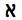
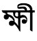

Кодування символів: Основні поняття
Intended audience:
шифрувальники XHTML/HTML (використовуючи редактори або скрипти), розробники скриптів (PHP, JSP, і т.д.), шифрувальники CSS, і кожен, хто не знайомий із термінологією кодування символів і хоче зрозуміти її основи.
Дана стаття містить ряд основних понять, необхідних для розуміння інших статей, які стосуються символів і кодування символів.
Unicode - універсальний набір символів, тобто стандарт, який визначає в одному місці всі символи, що
необхідні для написання більшості існуючих мов, що використовуються на комп'ютерах. Unicode прагне бути, і в значній мірі вже є, розширенням всіх інших наборів символів, які були закодовані.
Текст на комп'ютері або в Мережі складається із символів. Символи представляють букви алфавіту, розділові знаки або інші символи.
У минулому, різні організації зібрали різні набори символів і створили кодування для них – один набір може охоплювати тільки основані на Латині західноєвропейські мови (за винятком таких країн ЄС як Болгарія чи Греція), інший може охоплювати, зокрема, Далекосхідну мову (таку як Японська), інші можуть бути одним з багатьох наборів розроблених в досить спеціальний спосіб для подання іншої мови десь у світі.
На жаль, ви не можете гарантувати ні того, що ваш додаток буде підтримувати всі кодування, ні того, що дане кодування буде підтримувати всі ваші потреби для представлення даної мови. Крім того, як правило, неможливо об'єднати різні кодування на тій самій веб-сторінці або в базі даних, тому, як правило, дуже важко підтримувати багатомовні сторінки, використовуючи підходи ‘успадкування‘ для кодування.
Unicode Консорціум забезпечує великий, єдиний набір символів, який направлений для включення всіх символів, необхідних для будь-якої системи письма у світі, включаючи стародавні скрипти (такі як Клинопис, Готика і Єгипетські Ієрогліфи). В даний час він є основним для архітектури мережі і операційних систем, і підтримується всіма основними веб-браузерами і додатками. Стандарт Unicode також описує властивості та алгоритми для роботи з символами.
Такий підхід полегшує роботу з багатомовними сторінками або системами, і забезпечує набагато краще покриття ваших потреб, чим більшість традиційних систем кодування.
Нижче показано скрипт блоки Unicode, як Unicode 5.2-ї версії:
Перші 65,536 позицій місця коду в наборі символів Unicode називається Базова Багатомовна Площина (BMP) . BMP включає в себе більшість найчастіше використовуваних символів.
Номер 65,536 це 2 в 16 степені. Іншими словами, максимальне число підстановок бітів, які ви можете отримати в двох байтах.
Набір символів Unicode також має місце для близько мільйона додаткових позицій місця коду. Символи в цьому останньому діапазоні називають додаткові символи .
Для отримання додаткової інформації про Unicode, дивіться Домашня сторінка Unicode , або читайте посібник Введення в Системи Письма і Unicode
Важливо чітко розуміти відмінність між поняттями набір символів і кодування символів.
character set (набір символів) або repertoire (репертуар) включає в себе символи, які можна було б використати для конкретної мети - ті, які потрібні для підтримки
західноєвропейських мов на комп'ютерах, або ті, що китайська дитина буде вчити в школі в третьому класі (нічого спільного з комп'ютерами).
coded character set (закодований набір символів) - набір символів в якому унікальний номер був присвоєний кожному
символу. Одиниці закодованого набору символів відомі як місця коду . Значення місця коду представляє позицію символу в закодованому наборі символів. Наприклад, місце коду для літери Г  в кодуванні символів Unicode рівне 225 в десятковій, або E1 в шістнадцятковій системі числення. (Зауважимо, що шістнадцяткова система числення
зазвичай використовується для посилання на місця коду, і буде тут використовуватися.) A Unicode code point can have a value between 0x0000 and 0x10FFFF.
Закодовані набори символів деколи називають code pages (кодові сторінки).
character encoding (кодування символів) віддзеркалює спосіб у який закодований набір символів відображається в байтах для маніпуляцій на
комп'ютері. На малюнку нижче показано, як символи й місця коду в скрипті Тіфінаг (Берберська мова) відображаються в послідовності байтів в пам'яті за допомогою кодування UTF-8. Значення місця коду для кожного символу перераховані безпосередньо нижче гліфа (тобто візуальне подання) для того символу у верхній частині діаграми. Стрілки показують, як місця коду переходять в послідовності байтів, де кожен байт представлений двозначним шістнадцятковим числом. Зверніть увагу, як Тіфінаг відображає місця коду трьома байтами, в той час, як знак оклику відображає одним байтом.
Це пояснення представляє в кращому вигляді деякі деталізовані номенклатури, які пов'язані з кодуванням. Більш детальну інформацію можна знайти в Технічній
Доповіді Unicode #17
Один набір символів, кілька кодувань. A в кодуванні символів ISO 8859-1 знаходиться на 65-ій позиції символів (починаючи з нуля), і закодована використовуючи
байт із значенням 65 для представлення на комп'ютері. Для ISO 8859-1 це ніколи не змінюється.
Проте для Unicode не все так просто. Хоча місце коду для літери Г  в
кодуванні символів Unicode завжди рівне 225 (у десятковій системі), в UTF-8 він представлений на комп'ютері двома байтами. Іншими словами, це не тривіально,
взаємне відображення між значенням кодування набору символів і закодованим значенням для цього символу.
Крім того, в Unicode є кілька способів кодування одного і того ж символу. Наприклад, літера Г  може бути представлена двома байтами в одному кодуванні і чотирьма байтами в іншому. Форми кодування які можуть використовуватися з Unicode
називаються UTF-8, UTF-16, та UTF-32.
UTF-8 використовує 1 байт для представлення символів в наборі ASCII, два байти для символів у кілька алфавітних блоків, і три
байти для решти BMP. Додаткові символи використовують 4 байти.
UTF-16 використовує 2 байти для будь-якого символу в BMP, і 4 байти для додаткових символів.
UTF-32 використовує 4 байти для всіх символів.
У наступній таблиці, в першому рядку чисел представлена позиція символу в кодуванні Unicode.
Інші рядки показують значення байтів, використовуваних для представлення цього символу в належному кодуванні символів.

Місце коду
U+0041
U+05D0
U+597D
U+233B4
UTF-8
41
D7 90
E5 A5 BD
F0 A3 8E B4
UTF-16
00 41
05 D0
59 7D
D8 4C DF B4
UTF-32
00 00 00 41
00 00 05 D0
00 00 59 7D
00 02 33 B4
Для отримання додаткової інформації про символи і кодування дивіться Представляючи Набори Символів і Кодування Обробка кодування символів в HTML і CSS
Для XML і HTML (починаючи з версії 4,0 і вище) набір символів документу називається Універсальний
Набір Символів (UCS) як це визначено обома стандартами ISO/IEC 10646 та Unicode. (Для простоти і відповідно до загальноприйнятої практики, ми будемо називати
UCS тут просто як Unicode .)
Що це означає, те що логічна модель, яка описина в термінах набору символів, що описує як обробляються XML і HTML визначається
Unicode. (З практичної точки зору це означає, що браузери зазвичай перетворюють весь текст в Unicode внутрішньо.)
Зауважимо, що це не означає, що всі HTML і XML документи повинні використовувати кодування Unicode! Однак це означає, що
документи можуть містити лише символи визначені Unicode. Будь-яке кодування може використовуватися для вашого документу до тих пір, поки воно правильно призначене і являє собою підмножину
набору символів Unicode.
Для отримання додаткової інформації про набір символів документа дивіться статтю Набір символів документа
Although we have used it without much qualification so far in this article, the term 'character' is used here in an abstract and somewhat vague way to refer to the smallest component of written language that has semantic value. However, the term 'character' is often used to mean different things in different contexts: it can variously refer to the visual, logical, or byte-level representation of a given piece of text. This makes the term too imprecise to use when specifying algorithms, protocols, or document formats, unless you explicitly define what you mean by it. If the term 'character' is used in those contexts in a technical sense, the recommendation is to use it as a synonym for code point (described above).
It is particularly important to remember that bytes only rarely equate to characters in Unicode, as shown in the earlier examples.
However, particularly in complex scripts, what a user perceives as a smallest component of their alphabet (and so what we will call a user-perceived character ) may actually be a sequence of code points. For example, the Vietnamese letter ề will be perceived as a single letter even if the underlying code point sequence is U+0065 LATIN SMALL LETTER E + U+0302 COMBINING CIRCUMFLEX ACCENT​ + U+0300 COMBINING GRAVE ACCENT​ ksha (ক্ষ), which is composed of the sequence U+0995 BENGALI LETTER KA + U+09CD BENGALI SIGN VIRAMA + U+09B7 BENGALI LETTER SS,
It is often important to take into account these user-perceived characters. For example, it is common to treat certain combinations of code points as a single unit for various editing operations, such as line-breaking, cursor movement, selection, deletion, etc. It would usually be problematic if a user selection accidentally omitted part of the letters just mentioned, or if a line-break separated a base character from its following combining characters.
In order to approximate user-perceived character units for such operations, Unicode uses a set of generalised rules to define grapheme clusters – sequences of adjacent code points that can be treated as a unit by applications. A single alphabetic character like e is a grapheme cluster, but so also is any combination of base character and following combining character(s), such as ề mentioned above.
Unicode Standard Annex #29: Text Segmentation actually defines two types of grapheme cluster: extended grapheme clusters, and legacy grapheme clusters. Here when we say 'grapheme cluster' we mean the former. It is not recommended to use the latter.
user-perceived character
(possible) decomposition & grapheme cluster boundaries
Currently there are, however, some limitations to the grapheme cluster rules: for example, the rules split the Bangla user-perceived character kshī (ক্ষী ) into two adjacent grapheme clusters, rather than enveloping the whole orthographic syllable. Applications that need to work with user-perceived characters in Bangla therefore need to apply some script-specific tailoring of the grapheme cluster rules.
user-perceived character 
decomposition & grapheme cluster boundaries
The appropriate units for editing operations sometimes vary according to what you want to do. For example, if you backspace over the Hindi word हूँ (U+0939 DEVANAGARI LETTER HA + U+0942 DEVANAGARI VOWEL SIGN UU​ + U+0901 DEVANAGARI SIGN CANDRABINDU​ the application will typically first delete each of the two combining characters, and then the base. However, if you 'forward-delete' while the cursor is at the left of the word most applications will delete the whole grapheme cluster in one go.
CSS, in order to refer to an indivisible text unit in a given context, uses the term typographic character unit . The definition of what constitutes a typographic character unit depends on the operation that is being applied. So when working with the example of ề above, when deleting forwards there would be a single typographic character unit, but three when backspacing. Also, typographic character units cover the cases such as Bengali ksha , which grapheme clusters currently don't. The determination of what constitutes a typographic character unit in a given language and editing context is deferred to the application, rather than spelled out in rules.
A font is a collection of glyphs . In a simple scenario, a glyph is the visual representation of a code point. The glyph used to represent a code point will vary with the font used, and whether the font is bold, italic, etc. In the case of emoji, the glyphs used will vary by platform.
In fact, more than one glyph may be used to represent a single code point, and multiple code points may be represented by a single glyph.
Emoji provide another example of the complex relationship between code points and glyphs.
U+1F46A FAMILY U+1F468 U+200D U+1F469 U+200D U+1F466 U+1F468 U+200D U+1F469 U+200D U+1F467 U+200D U+1F466
The emoji character for "family" has a code point in Unicode: üë™ [U+1F46A FAMILY] . It can also be formed by using a sequence of code points: ü뮂Äçüë©‚Äçüë¶ [U+1F468 U+200D U+1F469 U+200D U+1F466] . Altering or adding other emoji characters can alter the composition of the family. For example the sequence ü뮂Äçüë©‚Äçüëß‚Äçüëß [U+1F468 U+200D U+1F469 U+200D U+1F467 U+200D U+1F466] results in a composed emoji glyph for a "family: man, woman, girl, boy" on systems that support this kind of composition. Many common emoji can only be formed using sequences of code points, but should be treated as a single user-perceived character when displaying or processing the text.
Екранований символ - спосіб представлення символа без його фактичного використання.
Наприклад, не існує способу безпосереднього представлення такого символу Івриту, як Чђ у документі, якщо ви використовуєте кодування ISO 8859-1
(яке охоплює західноєвропейські мови). Один із способів, щоб вказати, що ви хочете включити цей символ є використання такого екранованого символу XHTML, як
א. Оскільки набором символів документа є Unicode, клієнтський додаток повинен розпізнати, що це представляється такий символ Івриту, як Алеф.
Приклади екранованих символів в HTML / XHTML і CSS, а також поради про те, коли і як їх використовувати, можна знайти у статті Використання екранованих символів в розмітці і CSS
При отриманні документа із сервера, сервер зазвичай відправляє деяку додаткову інформацію з документом. Це називається заголовком HTTP. Ось приклад такого роду інформації про документ, який передається по заголовку HTTP з документом, як він переміщається від сервера до клієнта.
Другий рядок знизу в даному прикладі несе інформацію про кодування документу.
HTTP/1.1 200 OK
Date: Wed, 05 Nov 2003 10:46:04 GMT
Server: Apache/1.3.28 (Unix) PHP/4.2.3
Content-Location: CSS2-REC.en.html
Vary: negotiate,accept-language,accept-charset
TCN: choice
P3P: policyref=http://www.w3.org/2001/05/P3P/p3p.xml
Cache-Control: max-age=21600
Expires: Wed, 05 Nov 2003 16:46:04 GMT
Last-Modified: Tue, 12 May 1998 22:18:49 GMT
ETag: "3558cac9;36f99e2b"
Accept-Ranges: bytes
Content-Length: 10734
Connection: close
Content-Type: text/html; charset=UTF-8
Content-Language: en
Якщо документ створюється динамічно за допомогою скриптів, ви точно зможете додати цю інформацію до заголовку HTTP. Якщо ви
обслуговуєте статичні файли, сервер може зв'язати цю інформацію з файлами. Спосіб налаштування сервера для передачі інформації про
кодування символів таким чином буде варіюватися від сервера до сервера. Тому ви повинні дізнатися про нього у адміністратора сервера.
Як, приклад, Apache сервери зазвичай надають кодування за замовчуванням, яке зазвичай можна перевизначити користувацькими налаштуваннями. Наприклад,
користувач може додати наступний рядок до .htaccess файлу для обслуговування всіх файлів з розширенням .html як UTF-8 в цій та всіх дочірніх директоріях:
AddType 'text/html; charset=UTF-8' html
Для отримання додаткової інформації про зміну кодування в заголовку HTTP, дивіться Налаштування HTTP charset параметру